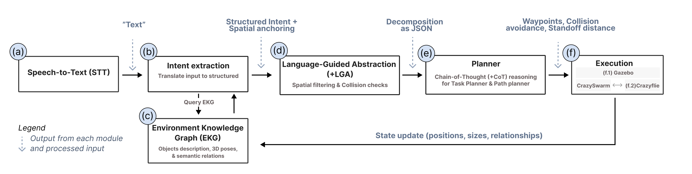

UAV control using a Voice User Interface & Spatial Anchoring using an Environment Knowledge Graph
A ROS2-based project that enables intelligent control for the Crazyflie nano quadcopter using Large Language Models (LLM).
Natural language interfaces (NLIs) offer a more intuitive alternative to rigid robotic command syntax, but must connect high-level intent to physically grounded action. We present a neurosymbolic architecture for voice-based UAV navigation that integrates an Environment Knowledge Graph (EKG) for spatial anchoring, Language-Guided Abstraction (LGA) for context-sensitive filtering, and Chain-of-Thought (CoT) prompting for task planning. We evaluated the architecture through a computational ablation study (n = 67 test cases) and a within-subjects human-in-the-loop flight study (N = 14). In the user study, NLI was associated with higher perceived usability (p = .012) and lower self-reported Mental Demand (p = .021) than a rigid-syntax interface, while participant-level task-error counts did not differ significantly (p = .085). Qualitative debriefings identify egocentric-allocentric perspective conflicts and feedback needs, motivating design requirements for transparent, spatially anchored UAV interaction.
Watch the video demonstration showing the real-time voice interface and flight execution in a simulated warehouse setup. The system processes spoken user command recordings, transcribes them using local Whisper ASR, and converts them to coordinates.

This project integrates LLM-based planning with the Crazyflie drone platform, allowing users to control the drone using natural language commands. It combines ROS2 (Robot Operating System 2) with Gazebo simulation via CrazySim's Software-in-the-Loop (SITL) backend.
The custom software interface consists of several key ROS2 packages (located under
ros_ws/src/):
simulation_ws/): Software-in-the-Loop simulator for
Crazyflie.| Requirement | Version | Notes |
|---|---|---|
| Ubuntu | 22.04 (Jammy) | Only tested platform |
| ROS2 | Humble | Desktop install recommended |
| Gazebo | Garden (v7.x) | Not Harmonic — CrazySim requires Garden |
| Python | 3.10 | Ships with Ubuntu 22.04 |
git clone https://github.com/TTZ-Unbemannte-Flugsysteme/LMinterface.git
cd LMinterfaceApply the patch to the CrazySim simulation tools:
cd simulation_ws/CrazySim/crazyflie-firmware/tools/crazyflie-simulation
patch -p1 < ../../../../../my_custom_fix.patch
cd ../../../../../cd simulation_ws/CrazySim/crazyflie-lib-python
pip install -e .
cd ../../..Link the custom world files:
ln -sf $(pwd)/my_sim_assets/*.sdf \
$(pwd)/simulation_ws/CrazySim/crazyflie-firmware/tools/crazyflie-simulation/simulator_files/gazebo/worlds/cd simulation_ws/CrazySim/crazyflie-firmware
mkdir -p sitl_make/build && cd sitl_make/build
cmake ..
make all
cd ../../../../..Add the following to your ~/.bashrc (adjust
ROOT to your clone location):
source /opt/ros/humble/setup.bash
ROOT="$HOME/path/to/LMinterface"
source "${ROOT}/ros_ws/install/setup.bash"
# Gazebo resource paths
export GZ_SIM_RESOURCE_PATH="${GZ_SIM_RESOURCE_PATH}:${ROOT}/my_sim_assets"
# OpenAI/Whisper API Key (Required if using OpenAI/Whisper cloud API)
export OPENAI_API_KEY="your-api-key-here"sudo apt install -y \
ros-humble-tf-transformations \
ros-humble-motion-capture-tracking \
ros-humble-motion-capture-tracking-interfaces \
byobu
pip install rowan nicegui==1.4.36 sse-starlette==1.8.2 numpy==1.23.5 faster-whispersource /opt/ros/humble/setup.bash
cd ros_ws
colcon build
source install/setup.bashDownload the Qwen 2.5 7B Instruct GGUF:
pip install huggingface-hub
huggingface-cli download Qwen/Qwen2.5-7B-Instruct-GGUF \
qwen2.5-7b-instruct-q5_k_m-00001-of-00002.gguf \
qwen2.5-7b-instruct-q5_k_m-00002-of-00002.gguf \
--local-dir ros_ws/src/voice_asr/voice_asr/python3 -c "import whisper; whisper.load_model('base.en')"bash launch_full_system.sh
This starts a byobu session running the Gazebo simulation, the Crazyswarm2 driver, the LLM
interface servers, and the Web UI.
Open http://localhost:5000 in your browser to command the drone using voice or text.
If you use this work, please cite: